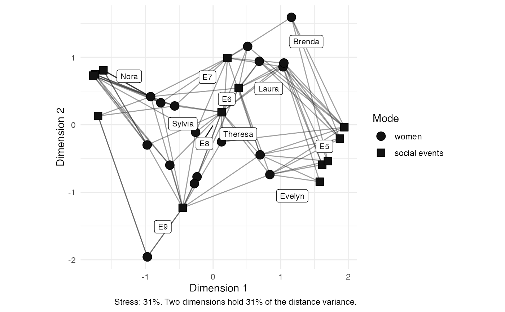

The "scaling" layout places nodes by multidimensional scaling, so that the distance drawn between two nodes approximates the number of steps of the shortest path between them. Unlike a force-directed layout, then, the coordinates can be read, and so this layout draws labelled axes, at a fixed ratio so that the two axes share one scale.
Which algorithm is used depends on the size of the network.
Up to a hundred nodes, classical multidimensional scaling is used,
as igraph::layout_with_mds() offers it.
Above that, or where pivots is given,
pivot multidimensional scaling is used instead,
as graphlayouts::layout_with_pmds() offers it,
which approximates the same solution from a sample of the nodes
and is much the faster for a large network.
Note that "mds" and "pmds" remain available as layouts in their own right,
though "pmds" then requires its own pivots.
Two dimensions rarely hold every path distance of a network at once,
so graphr() captions the plot with how well this one does:
see check_stress() for how to read the score.
Usage
layout_scaling(.data, pivots = NULL, circular = FALSE, times = 1)
layout_tbl_graph_scaling(.data, pivots = NULL, circular = FALSE, times = 1)Source
Kruskal, Joseph B. 1964. "Multidimensional scaling by optimizing goodness of fit to a nonmetric hypothesis", Psychometrika 29(1): 1-27. doi:10.1007/BF02289565
Brandes, Ulrik, and Christian Pich. 2007. "Eigensolver methods for progressive multidimensional scaling of large data", in Graph Drawing, 42-53. doi:10.1007/978-3-540-70904-6_6
Arguments
- .data
Some
{manynet}compatible network data.- pivots
The number of nodes to approximate the scaling from. By default this is
NULL, which uses every node where the network has no more than a hundred, and samples the nodes otherwise. Giving a number selects the pivot algorithm whatever the size of network.- circular
Should the layout be transformed into a radial representation. Only possible for some layouts. Defaults to FALSE. Required for
{ggraph}compatibility.- times
Maximum number of iterations, where appropriate. Required for
{ggraph}compatibility, and ignored by the layouts that do not iterate.
Details
The distances scaled are those of the unweighted network, that is, the number of ties on the shortest path between two nodes. Tie weights are ignored, since the interpretation of a drawn distance is then the same whatever the network, and since a signed network has no shortest paths to speak of.
Where a network is disconnected, there is no path between its components, and so no distance to scale. Each component is laid out and the components are then placed beside one another, and the fit is reported over the pairs of nodes that a path does connect.
Examples
graphr(manynet::ison_southern_women, layout = "scaling")
